Klassische Routine
- Trockenes Wischen
- Mehr Reibung
- Höherer Papierverbrauch möglich
- Feuchttücher werden oft zusätzlich genutzt
PUDADO
EcoBum von Pudado ist das moderne Plug-and-Play-Handbidet für Reinigung mit Wasser – frisch, sanft und einfach in deinem Badezimmer.
Kein Strom · Einfache Installation · Reinigung mit Wasser · Für den täglichen Gebrauch
Das Prinzip
Wasser wird überall dort genutzt, wo echte Sauberkeit wichtig ist. EcoBum bringt dieses einfache Prinzip in deine tägliche Routine – klar, sanft und unkompliziert.
Vorteile
Wasser ist eine natürliche und gründliche Ergänzung zur täglichen Reinigung.
Die Reinigung mit Wasser kann trockenes Reiben reduzieren und sich besonders angenehm anfühlen.
Schnell angeschlossen, intuitiv genutzt und für die tägliche Badezimmerhygiene entwickelt.
Eine kleine Veränderung für mehr Frische, Komfort und ein modernes Badezimmergefühl.
EcoBum kann dabei helfen, den Verbrauch von Toilettenpapier und Feuchttüchern im Alltag zu reduzieren.
Wer weniger Papier und Feuchttücher nutzt, kann Abfall reduzieren und Ressourcen bewusster einsetzen.
Produkt
EcoBum wurde für Menschen entwickelt, die Hygiene einfacher, klarer und angenehmer machen möchten. Statt sich nur auf trockenes Papier zu verlassen, ergänzt EcoBum die tägliche Reinigung mit Wasser. Das Ergebnis: ein moderneres, frischeres und komfortableres Badezimmergefühl.
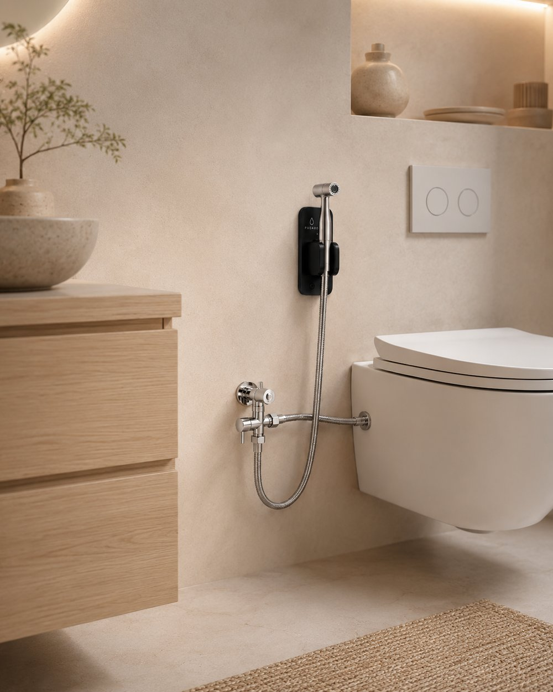
Visualisierung im Badezimmer – kein finales Produktfoto
Lieferumfang
Diese Komponenten sind für das EcoBum Home Set vorgesehen – sauber zusammengestellt, einfach gedacht und für den täglichen Gebrauch entwickelt.
Kernkomponenten
Für Installation & Sicherheit vorgesehen
Die vorgesehenen Komponenten können sich je nach finaler Produktversion noch leicht ändern.
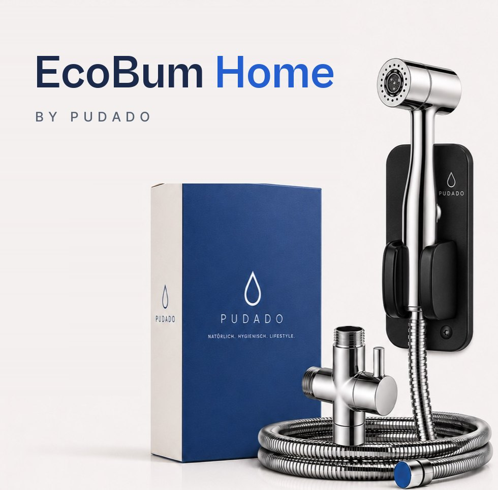
Produktvisualisierung – finale Produktfotos folgen
Im Badezimmer
Vom hellen Holz-Bad bis zum dunklen Stein-Look – EcoBum fügt sich ruhig und hochwertig in moderne Badezimmer ein.
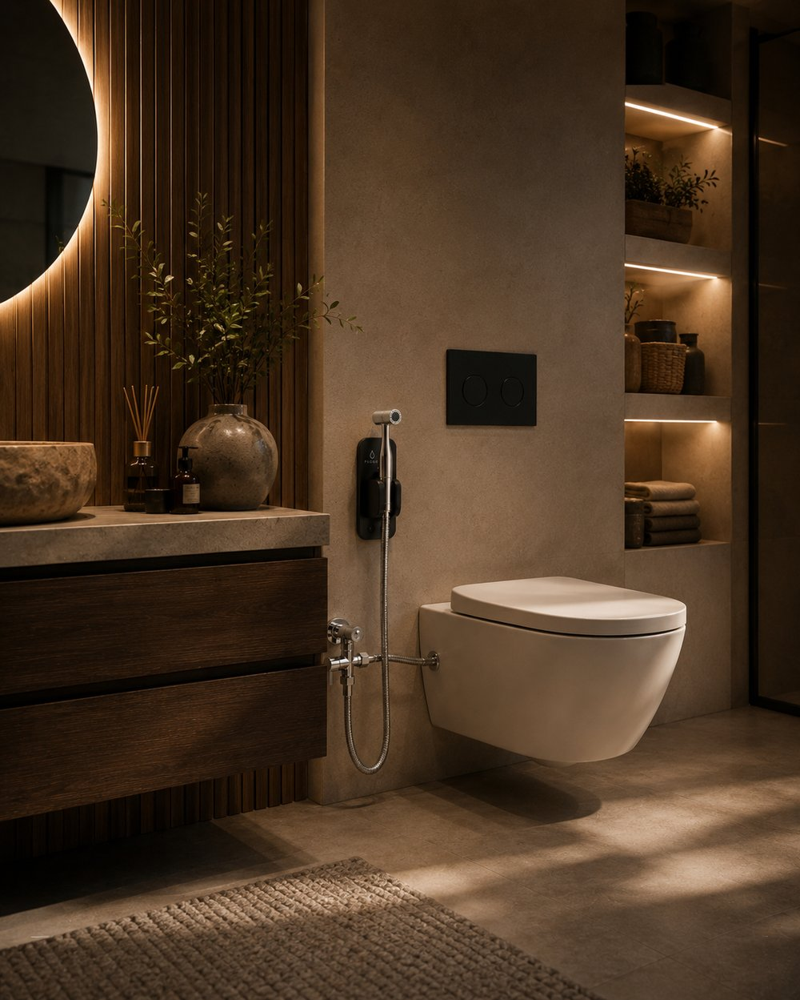
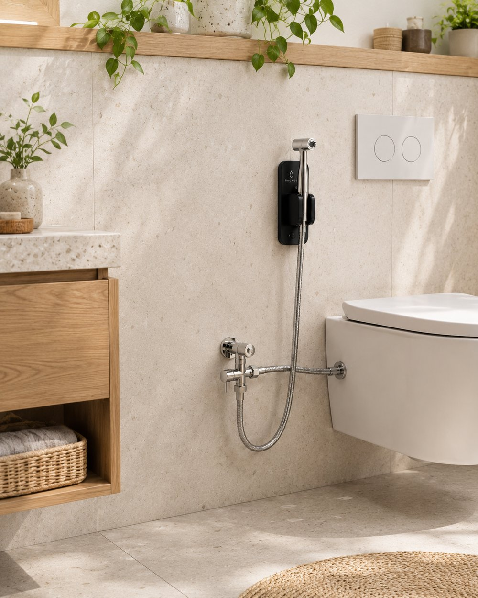
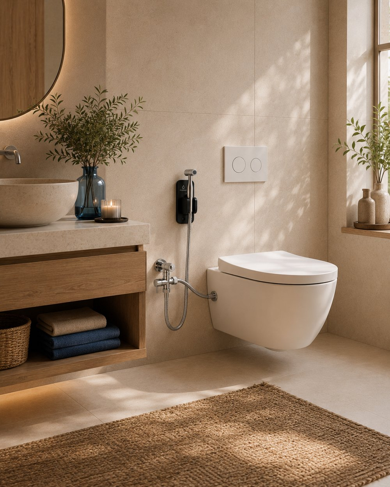
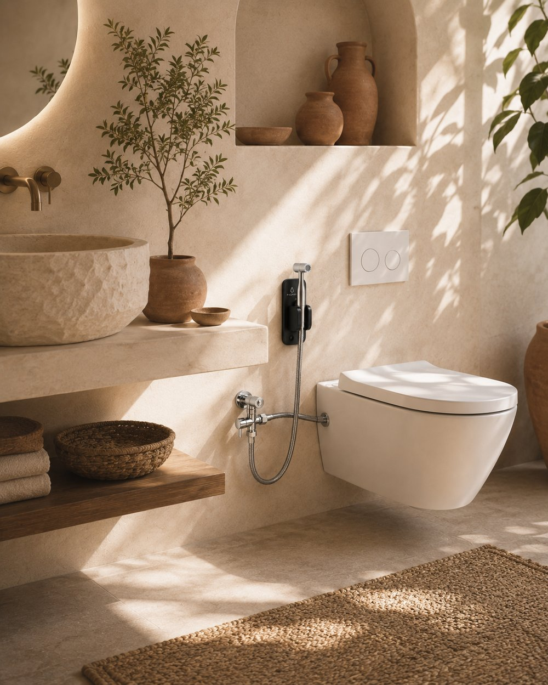
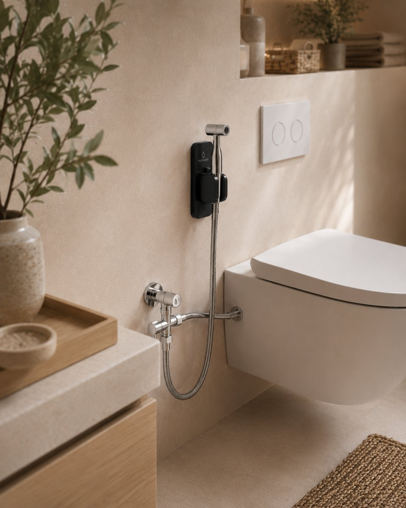
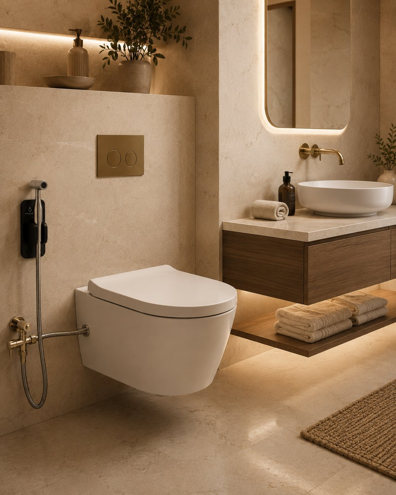
Visualisierung im Badezimmer – kein finales Produktfoto
Qualität & Technik
Jedes Teil des EcoBum Home Sets ist auf einfache Installation, sichere Nutzung und ein hochwertiges Gefühl ausgelegt.
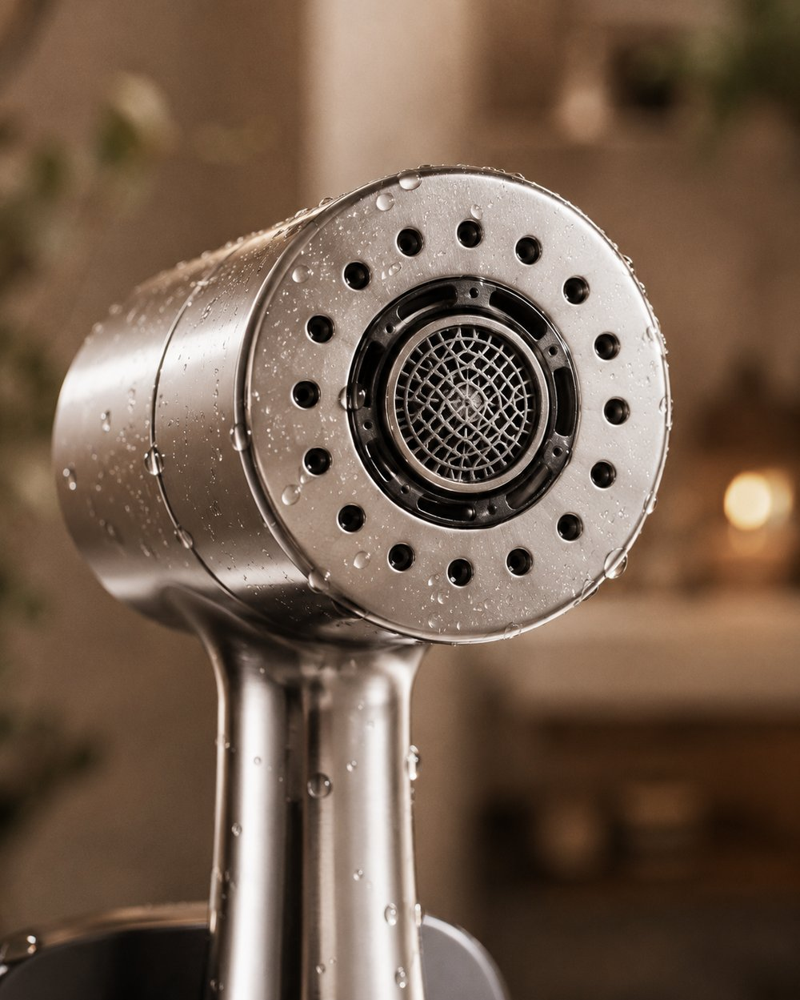
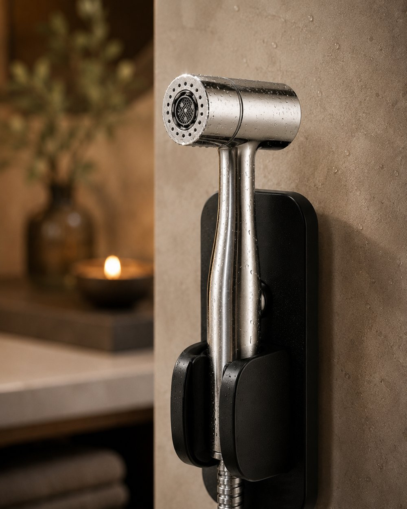
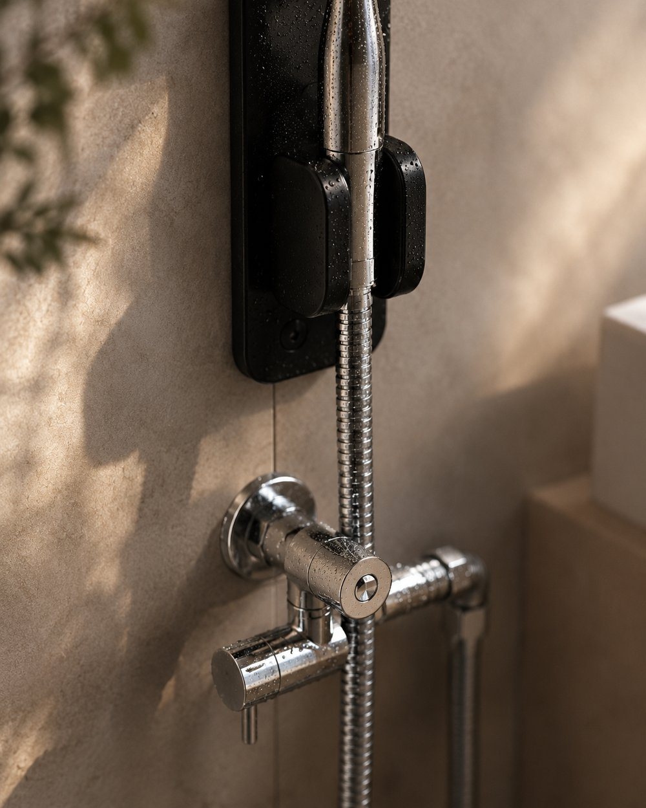
Produktvisualisierung – finale Produktfotos folgen
Geplante Premium-Materialrichtung, abhängig von finaler Produktversion
Mögliche Standards wie CE, DVGW, WRAS, ACS, EN 1717, REACH oder RoHS sind Ziel der Produktentwicklung und in Prüfung. Welche Zertifizierungen die finale Produktversion trägt, hängt vom finalen Lieferanten und der abschließenden Prüfung ab.
So funktioniert die Installation
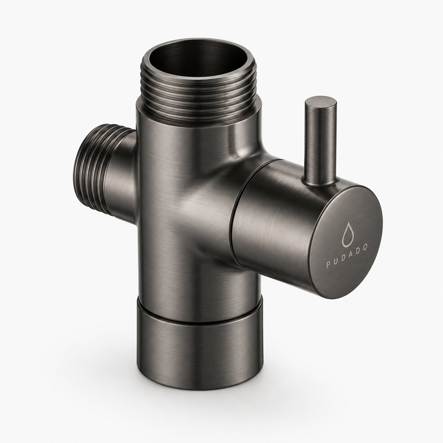
Produktvisualisierung – finale Produktfotos folgen
Das T-Stück wird zwischen Eckventil und Zulaufschlauch gesetzt, wenn der vorhandene Anschluss kompatibel ist.
Vor jeder Installation muss das Wasser am Eckventil abgestellt werden.
Das T-Stück wird zwischen Eckventil und Zulaufschlauch gesetzt, wenn der vorhandene Anschluss kompatibel ist.
Der Brauseschlauch verbindet T-Stück und Handbidet-Sprayer.
Die Halterung kann je nach Untergrund geklebt oder geschraubt werden.
Hinweis: Die Installation kann je nach vorhandenem Wasseranschluss variieren. Bei Unsicherheit bitte fachkundige Hilfe in Anspruch nehmen.
Foto-Vorschau
Wähle 2–3 Fotos deines Anschlusses für eine lokale Vorschau. Es werden keine Fotos übertragen oder automatisch geprüft.
Deine Fotos bleiben in dieser lokalen Vorschau. Wenn du uns schreibst, kannst du passende Fotos selbst an deine E-Mail anhängen.
Die Vorschau überträgt keine Fotos an Pudado und speichert sie nicht dauerhaft.
Die Vorschau beurteilt die Kompatibilität nicht. Bei Unsicherheit bitte eine fachkundige Person vor Ort fragen.
Anwendungsfälle
EcoBum ist eine einfache Ergänzung für viele Alltagssituationen – sanft, frisch und unkompliziert. Bei medizinischen Beschwerden bitte immer ärztlichen Rat einholen.
Sensible Haut
Wasser kann trockenes Reiben reduzieren und die tägliche Reinigung sanft ergänzen.
Menstruation, Schwangerschaft & Wochenbett
In sensiblen Lebensphasen kann eine vorsichtige Reinigung mit Wasser als angenehm empfunden werden. Bei Beschwerden bitte fachlichen Rat einholen.
Senioren & eingeschränkte Beweglichkeit
Ein gut erreichbares Handbidet kann die tägliche Reinigung erleichtern. Wichtig sind eine passende Installation und eine sichere Nutzung.
Familien & Alltag
Für Haushalte, die Reinigung mit Wasser und einen bewussteren Umgang mit Papier verbinden möchten.
EcoBum ist ein Hygieneprodukt und kein Medizinprodukt. Bei gesundheitlichen Beschwerden wende dich bitte an fachkundige oder ärztliche Beratung.
Toilettenpapierverbrauch realistisch einschätzen
Der Rechner zeigt eine vorsichtige Schätzung, wie viel Toilettenpapier im Alltag genutzt wird und wie sich der Verbrauch durch Reinigung mit Wasser reduzieren könnte.
Geschätzter CO₂e-Fußabdruck
–
Vereinfachte Orientierung, keine vollständige Ökobilanz. Der tatsächliche Wert hängt von Papierart, Recyclinganteil, Energie, Verpackung und Transport ab.
Die Ergebnisse sind unverbindliche Modellschätzungen. Der tatsächliche Verbrauch hängt von Produkt, Gewohnheiten und Nutzung ab. EcoBum kann den Papierverbrauch ergänzend reduzieren, eine bestimmte Einsparung wird nicht garantiert.
Nachhaltigkeit
Nachhaltigkeit beginnt oft nicht mit großen Versprechen, sondern mit kleinen Gewohnheiten. EcoBum kann helfen, den Verbrauch von Toilettenpapier im Alltag zu reduzieren – einfach, angenehm und ohne komplizierte Umstellung.
Wer Wasser zur Reinigung nutzt, braucht häufig weniger Papier. Die tatsächliche Einsparung hängt von der persönlichen Nutzung ab.
Wasser wird weltweit für Reinigung genutzt, weil es naheliegend, sanft und gründlich ist. EcoBum bringt diese Idee ins Badezimmer.
EcoBum funktioniert mit Wasserdruck und benötigt keinen Strom. Das reduziert unnötige Komplexität im Alltag.
Wir machen keine pauschalen Umweltversprechen. Wir sagen klar: EcoBum kann helfen, Papier zu reduzieren – wie viel, hängt von der Nutzung ab.
Warum Pudado?
Pudado entwickelt durchdachte Sanitärlösungen für Menschen, die Hygiene, Komfort und einen bewussteren Umgang mit Ressourcen verbinden möchten. Unser Anspruch ist es, bestehende Badezimmer einfach und sinnvoll aufzuwerten – mit klarer Funktion, modernem Design und ehrlicher Kommunikation. EcoBum ist unser erster Schritt.
PUDADO
Wir möchten Lösungen entwickeln, die sich sinnvoll in bestehende Badezimmer integrieren lassen und alltägliche Hygieneroutinen einfacher und angenehmer machen.
Unsere Produkte sollen dabei helfen, Papier, Feuchttücher und andere Einwegprodukte bewusster zu verwenden. Nachhaltigkeit verstehen wir als Entwicklungsziel – transparent und ohne übertriebene Versprechen.
Klare Funktionen, verständliche Anwendung und modernes Design sollen jedes Pudado-Produkt prägen. EcoBum macht diesen Anspruch erstmals sichtbar.
Moodbild – dient der Atmosphäre
FAQ
EcoBum Home ist ein geplantes Plug-and-Play-Handbidet-Set für die Reinigung mit Wasser. Es wird am Wasseranschluss der Toilette angebracht und reinigt mit einem dosierbaren Wasserstrahl – als Ergänzung zu trockenem Papier.
EcoBum ist für gängige Anschlüsse mit Eckventil und flexiblem Zulaufschlauch konzipiert. Ob es zu deiner Toilette passt, hängt vom Anschluss ab. Bei Unsicherheit bitte eine fachkundige Person fragen.
Nein, nicht zwingend. Die Wandhalterung kann geklebt oder für besonders festen Halt geschraubt werden – je nach Untergrund. Der Wasseranschluss sollte vor der Installation trotzdem geprüft werden; bei Unsicherheit hilft eine Fachperson.
Nicht immer. Bei Unterputz-Spülkästen ist der Anschluss oft in der Wand verbaut, sodass eine Standard-Plug-and-Play-Montage nicht überall möglich ist. Hier sollte der Anschluss vorher geprüft oder eine Fachperson gefragt werden.
Die klebbare Wandhalterung ist ohne Bohren gedacht und kann für Mietwohnungen interessant sein. Bitte trotzdem vorher mit Vermieterin oder Vermieter klären, ob Installationen am Wasseranschluss erlaubt sind.
Du kannst 2–3 Anschlussfotos lokal in unserer Vorschau ansehen. Sie werden nicht automatisch geprüft oder übertragen. Bei Unsicherheit hilft eine fachkundige Person vor Ort; Fragen kannst du uns per E-Mail stellen.
Vorgesehen sind unter anderem Handbidet-Sprayer, Wandhalterung, T-Stück, Absperrhahn, Rückflussverhinderer, Brauseschlauch, flexibler Zulaufschlauch, PTFE-Band und Anleitung. Die genaue Zusammenstellung kann sich je nach finaler Produktversion noch leicht ändern.
Der Absperrhahn ermöglicht es, das Wasser gezielt am EcoBum abzustellen, ohne die ganze Wohnung zu betreffen. Der Rückflussverhinderer ist als zentrales Sicherheitsprinzip vorgesehen, damit kein Wasser in die falsche Richtung fließt.
Nein, EcoBum funktioniert mit Wasserdruck und benötigt keinen Strom.
Das hängt von der persönlichen Nutzung ab. Viele Menschen nutzen Wasser zur Reinigung und danach deutlich weniger Papier – zum Beispiel nur noch zum Trocknen.
Wasser kann in diesen Phasen eine sanftere Ergänzung zu trockenem Papier sein und wird von vielen als angenehm empfunden. Bei medizinischen Beschwerden bitte immer ärztlichen Rat einholen.
Ziel der Produktentwicklung ist es, relevante Anforderungen und Prüfungen zu berücksichtigen. Aktuell liegen noch keine Zertifizierungen vor – sobald sich das ändert, aktualisieren wir diese Angabe.
Die genauen Garantie- und Rückgabebedingungen stehen noch nicht fest und werden vor dem Verkaufsstart bekanntgegeben.
EcoBum befindet sich in Vorbereitung und ist noch nicht verfügbar. Auch die Newsletter-Anmeldung ist noch nicht aktiv. Bei Fragen erreichst du uns per E-Mail an info@pudado.de.
Weitere Fragen? Schreib uns gerne. Zum Kontakt
Kontakt
Wir bereiten den nächsten Schritt vor. Wenn du mehr über EcoBum erfahren möchtest oder Interesse an einer Zusammenarbeit hast, kontaktiere uns gerne.
EcoBum ist noch nicht verfügbar. Auch die Newsletter-Anmeldung wird noch vorbereitet. Für Produktfragen, Installation oder Zusammenarbeit erreichst du uns per E-Mail.
E-Mail an info@pudado.de